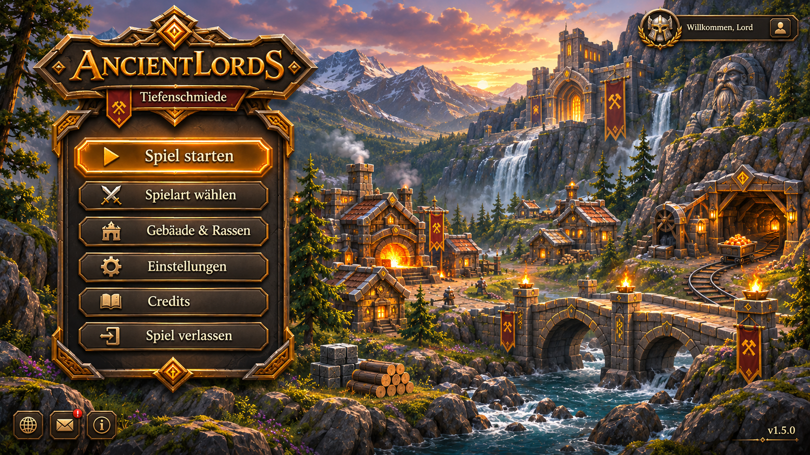

01 – Vision
Dieses Kapitel fasst das inhaltliche Leitbild von AncientLords zusammen. Es beschreibt nicht nur, was das Spiel ist, sondern auch, wie es sich anfühlen soll.

Kurzbeschreibung
AncientLords ist ein Fantasy-Aufbaustrategiespiel mit Multiplayer-Fokus. Bis zu vier Spieler übernehmen die Rolle alter Gottheiten. Statt klassischer Direkteingaben an jede Einheit steuert der Spieler seine Kultur indirekt – durch Visionen, Prioritäten, magische Eingriffe und die Verteilung göttlicher Kraft.
Inspirationen sind unter anderem Die Siedler, Age of Empires, Majesty und Spirit Island.
Zielgefühl
- Eine belebte Welt, die auf den Spieler reagiert.
- Strategische Entscheidungen mit klaren Kosten und Konsequenzen.
- Fraktionen, die sich nicht nur statistisch, sondern auch visuell und systemisch unterscheiden.
- Eine hochwertige Präsentation, die sowohl spielerisch als auch atmosphärisch modern wirkt.
Kernpfeiler des Spiels
Diese Designpfeiler sollen bei allen zukünftigen Entscheidungen als Kontrollrahmen dienen.
1. Lebendige Autonomie
- Einheiten handeln nicht wie ferngesteuerte Werkzeuge, sondern wie glaubens- und bedürfnisgesteuerte Persönlichkeiten. Figuren haben ihren eigenen Willen und handeln eigenständig.
- Der Spieler beeinflusst ihr Verhalten über Prioritäten, Befehle, Glauben, Furcht und Infrastruktur. Auch Erlebnisse, Kommunikation und eigene Bedürfnisse fließen in die Entscheidungen der Figuren ein.
- Die Welt soll dadurch weniger statisch und stärker erzählerisch wirken.
2. Sichtbare Fraktionsidentität
- Jede Rasse benötigt eigene Bauformen, UI-Akzente, Berufe, Magiezugänge und Spielstile.
- Die Tiefenschmiede bilden den ersten Stilanker: Stein, Feuer, Metall, Runen und Geologie.
- Auch Systemnamen und Gebäude sollen fraktionsspezifisch bleiben.
3. Sinnvolle strategische Kosten
- Glaube, Forschung, seltene Zutaten und Bauentscheidungen konkurrieren um begrenzte Ressourcen.
- Magie und Alchemie bieten zusätzliche Spieltiefe. In jeder Runde können neue Zauber, Runen oder Tränke erforscht werden und so die Stärke der eigenen Fraktion beeinflussen.
- Wichtige Entscheidungen müssen Verzicht an anderer Stelle erzeugen.
4. Moderne Präsentation
- Lesbare 3D-Welt, hochwertige Effekte, reduzierte UI-Höhe, große Bildteaser und klare Panels.
- Wichtige Gameplay-Fenster zeichnen den Hintergrund weich und beruhigen ihn, statt ihn mit Informationen zu überladen.
- HUD, Menüdesign und Spielwelt folgen einem konsistenten Materialmix aus Stein, Holz, Bronze und Glutlicht.
Arbeitshypothese AncientLords soll nicht „ein weiteres RTS“ sein, sondern ein Spiel über Einfluss, Kultur und göttliche Prioritäten – mit weniger Mikromanagement und mehr emergentem Verhalten und realistisch wirkenden Entscheidungsprozessen der Spielfiguren.